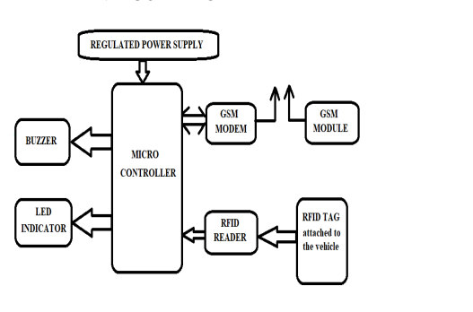

The Proposed System: RFID based bus ticketing system
The system works on RFID technology using different hardware and software methodology. The user is assigned a unique RFID card. For this user have to register on the time of subscribing providing his details which includes name, address, phone no and other details. This makes the user able to access any public bus after his travel plan is updated and his/her card unique id listed among the authorised cards to use the transport services. The user will place the RFID card on the RFID reader attached at the entry of the bus. The reader will scan the RFID card of the user and sends the details to an excel database. The details will be sent by third-party software tool called PLX-DAQ to the excel database, the tool is set to communicate with program running on the circuit. The user will be authenticated and at the same time the user will recieve a notification informing him/her of the current travel balance. The travel fare will be deducted from the balance accordingly depending on the bus boarded since every bus takes a specific route with a specific travel charge. The RFID will be interfaced with Arduino with the help of which cards will be scanned.
Depiction of the proposed system
